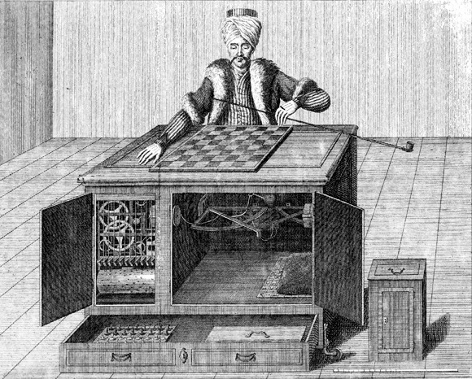
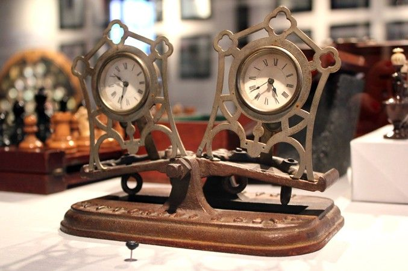
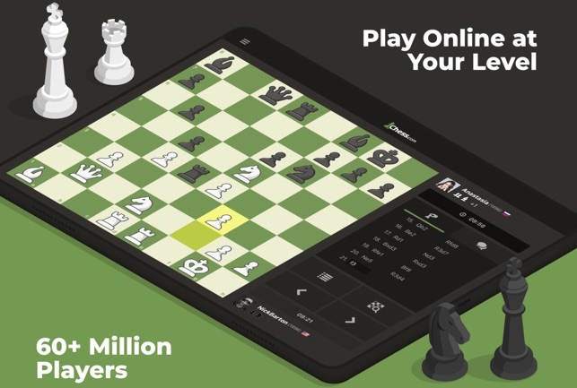

Chess went on for a millennium without interference by hardware and software, but incrimental improvement across the contemporary era have collectively altered the fabric of the game. From the chess clock to dedicated chess computers to websites, chess has experienced numerous advancements.
This web page will analyze the hardware and software changes in chess through the categories of early and modern hardware, chess software, and online chess.
Early Hardware
Tehcnological hardware (and especially) software were not present in chess until the late 1900s, but that did not stop people from pretending. The "Mechanical Turk" (1770), which used an automaton chess player and a hidden human player to micic (imaginary) AI, is a prime example.

"The Mechanical Turk," a fake chess-playing machine, 1770
The machine forshadowed chess computers that would one day be a reality, but in its 100 year lifetime, it served as an elaborate hoax. Despite its mischievous nature, the "Mechanical Turk" was nonetheless a magnificent machine: it used a series of levers and magnets, to control the automaton and communicate the position to the grandmaster (GM) hiding inside.
On a more pragmatic note, chess, as its stereotypes suggest, is an extremly long game. For example, spectators of a game by Howard Staunton described the experience negatively, as it took an entire 14 and a half hours to properly complete the game. This dilema prohibited the rise in popularity of watching chess, and resultingly, work on potential solutions followed.
A first idea was proposed in 1852, but only came into fruition between 1861 and 1875. Sand glasses were to be used to limit each player's total time, making them precursors to modern chess clocks. Unfortunately, it was found out that they had a plethora of problems. Temperature largely affected the accuracy of the make-shift clocks, which is not to mention their inherent inexactness, and they were prone to mix-ups on which side of the glass was whose.
Between 1866 and 1873, watches were used to tell the amount of time expended by each player, which was deductable from a total allocation. This process proved to be maticulous, and, once again, susceptible to mistakes, but the importance of this development was paving the way for the "tumbling" chess clock in 1883.

"Tumbling" chess clock, 1883
The "tumbling" chess clock consisted of two small pendulum clocks, those that move based on their suspension from a fulcrum, which was a scale in this case. Once a player finished their move, they would move tip scale so that their clock stopped ticking, and their openent's would. The streamlined timing of the "tumbling" chess clock introduced the presently ubiquitous principle of losing a game once out of time. By 1884, the first chess clock was patented, and by 1886, they were commonplace for tournaments. For a century afterwards they continued to experience technological augmentations, but those are much overshadowed by other types of hardware and software.
Modern Hardware
In the second half of the 20th century, chess hardware went from game-improving enhancements to playable AI that came to dominate over human players. Chess computers, and the electronic chess boards that often accompany them, have gone from minor gimmics to major players. Chess computers use algorithms to preview the different positions that may stem from each move they may play, and them evaluate their best play using that information.
The first (real) chess computer was El Ajedrecista, a bulky machine and board that was only capable of solving king-rook endgames (the most simple). In today's standards, the board seems like an infinitesimal accomplishment, but it was a groundbreaking achievement for 1912.
The decades after El Ajedrecista were mostly populated by research into the development of complete game-playing chess algorithms. The first to complete such a feat was actually Alan Turing. His program, named Turochamp was a (for the time) complex algorithm developed on paper, which was unable to be run on the computers of the day, and was therefore never adapted into an AI. Nonwithstanding, Turing actually manually executed the code, and was able to play against it.
By 1957, chess computers were able to play entire games, but still without graphics or in a timely manner, and in 1962, Kotok-McCarthy was able to play proper games against humans. On the note of inefficiency, a 1966 match between Kotok-McCarthy and the chess computer of the Moscow Institute for Theoretical and Experimental Physics lasted nine months. It took another decade for chess computers to play against humans, and in 1967, the Mac Hack was the first to win a tournament game against a human.
By 1976, chess computers were starting to become stronger, faster, and thus commerically availible. A notably product was the Boris chess computer (1977), which had only 256 byte RAM, but came with a board, making it more convenient and sucessful. A couple years later, in 1979, the Fidelity Voice Chess Challenger followed a similar format to Boris, and added a speech function to improve the experience of playing a computer. In 1983, the Milton Bradley Grandmaster took things even further, and was able to move pieces by itself, yet again ameliorating game quality. Sadly, by the 1990s, the competitive chess computer market began to fade since their machines could not compete with the processing power of PCs.
Fortunately, dedicated chess computers still held out in the area of supercomputers, most famous was IBM's Deep Blue, a project that began in 1989 and culminated in two matches against Gary Kasparov, the world chess champion at the time. The 1996 match resulted in a loss for Deep Blue, an outcome expected by the public, but in the 1997 rematch, Deep Blue somehow defeated Kasparov. Game 6 of the match is when Deep Blue secured its victory, and marks a turning point in the role of computers in chess. An analysis of the game is featured below.
Deep Blue (white) - Gary Kasparov (black), 1997, Game 6
Chess Software
With the growth in power of PCs, there existed a new opportunity to develop games for it. These games would have algorithms like those of prior chess computers, but stronger, and also contained GUIs, making them infinitely more playable. The first PC chess game to be released was Chess Master 2000, which came out in 1986, and looked ancient by that year)—its highly pixelated graphics were in dire need of being upgraded. Battle Chess came out two years later (1988), and featured a well-designed board where pieces would acutally have battle animations when the fought, some even consider it to have inspired wizard's chess in Harry Potter. There is still some purely AI-based chess software, though most digitial chess is now played online. Mac OS comes with a version of chess installed, and effectively acts as a better-looking version of Chess Master 2000, there are also dedicated chess video games on some consoles.
Playing against a computer has its benefits, your oponent is stronger than any player in the world, and you can take as long as you need for a move, but they are less logical, and less intneresting to play against. Chess has long been a social game, and playing against human oponents is favoured by almost all. It's therefore no suprise when the Internet Chess Club (ICC) was released in 1992. It allowed players to play games through the internet, but only in coordinates (at the time), this marked the beginning of the new era of online chess.
The internet's growth in popularity helped lead to even more ambitious online chess websites. Today, players can pick up a game at any moment, against a player from anywhere in the world who did so simultaneously. Chess AI has now been relegated for game analysis, while player-vs-player online chess has flourished. The most well-known players in the field are Chess.com (the most used) and Lichess (which are free), along with many others.

A Chess.com Advertisement
The sucess of online chess has led to new opportunities for the game as a whole. Tournaments are now being hosted exclusively online, as they might in Esports, the digital format also greatly expands the potential audience. On Twitch, a video streaming service, 41 million hours of chess were watched between March and August 2020. One tournament broadcasted there, PogChamps, a battle between popular internet personalities (all amateurs at chess) became the most viewed event on the platform for a time. The clip below (an example of the scholar's mate) even received over 13 million views.